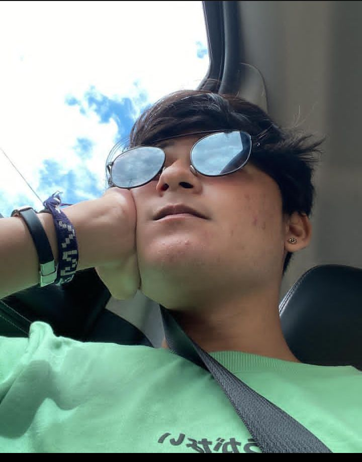

HIT ME HARD AND SOFT
Mais uma refeição, Billie? 🍽️ De surpresa, a cantora Billie Eilish liberou em todas as plataformas de música, na madrugada desta quarta-feira (22), um remix inédito da faixa “L’AMOUR DE MA VIE”. A canção, em sua versão original, integra o disco “HIT ME HARD AND SOFT”, o terceiro da carreira e fruto de mais uma união com o irmão, Finneas. Com uma estética à la anos 1980 e uma base que reestrutura todo seu instrumental, a novidade mostra potencial para ocupar as pistas. Já ouviu? O que achou? (📷 Divulgação) 🆘 O Rio Grande do Sul precisa de AJUDA. Doe água potável, itens de higiene, vestuário e cesta básica. As agências dos Correios de todo o Brasil estão enviando de graça até o local da tragédia. Acesse www.paraquemdoar.com.br, conheça iniciativas e faça suas doações.
Conheça VMZ
⭕ Francisco Sandro junior mais conhecido por VMZ é um rapper geek de Fortaleza no Ceará que produz músicas autorais e músicas baseadas em todo universo de anime e na cultura nipônica. Atualmente ele tem um dos maiores canais de rap nerd do Brasil com mais de 1,90 milhões de subscritos e mais de 300 milhões de views nos seus dois canais no YouTube. Possui sucessos musicais em canais de destaque com Sadstation e parcerias de renome com Piuzinho, Lil Chainz, Tauz, MHRAP, Hiosaki e 7 Minutoz. Com apenas 20 anos, VMZ alcançou grandes marcas em várias plataformas de música e em 2021 trouxe projetos inovadores para o senário musical brasileiro e atualmente é um dos nomes destacados no rap nerd no mundo.. Sabia de tudo? Diz nos comentários.. #mwilamania2025 #mwilamania #geek #nerd #CulturaGeek #rapnerd #rapgeekbr #vmz.
Rap Geek
⭕ EXCLUSIVO @akashi_cruz tem música confirmada com @7mz_rodrigues Akashi soltou a Tracklist de suas novas músicas e OHIO é uma delas, um feat com Gabriel Rodrigues do 7MINUTOZ.. Tracklist: 1. Akashi - AHAM AHAM 2. Akashi - UVA 3. Akashi - EGO feat. CN 4. Akashi - LITTLE BIG CJ feat. NOSRED 5. Akashi - OHIO feat Gabriel Rodrigues 6. Akashi - PARAMOUNT feat. VMZ 7. Akashi -MINHA JOGADA feat ÉODAN 8. Akashi - IOIÔ 9. Akashi - CHUVA Então fique atento "06/12 vai ser o dia do meu maior lançamento 💜" #mwilamania #mwilamania2024 #geek #nerd #rapgeek #rapgeekbr
MHRAP NOVAMENTE

⭕MHRAP lançou a parte 2 de algumas das suas músicas e a pergunta que por aqui ecoa é : “Ficou melhor que a primeira?” Bem, a resposta deixo que vocês respondam nos comentários, cada#rapgeekbr ouvinte tem os seus seus próprios gosto e define qual é o melhor pra si. A nossa equipe fez um rápida pesquisa pra ver qual delas está a ser melhor recebida Tipo Pain 2: 87 vídeos no TikTok e 660k de views no YouTube Tipo Tobi 2: 760 vídeos no TikTok e 2.6m de views no YouTube Vibe Hashirama 2: 52 vídeos no TikTok e 577k de views no YouTube Pela data de lançamento conseguimos notar a melhor recepção de Tipo Pain 2 em relação a Vibe Hashirama 2. #mwilamania #mwilamania2024 #geek #nerd #CulturaGeek #OrgulhoGeek #otaku #anime #rapgeek